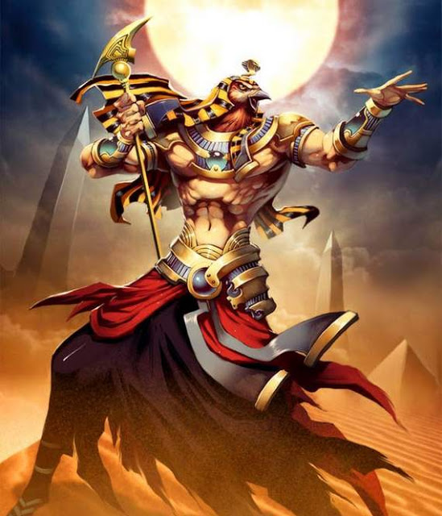

Atum Ra is a prominent Egyptian God who was the central figure in the story of the creation of the universe. His role as the creator god resulted in him being the first Egyptian god worshipped in Heliopolis. He is associated with the entire universe, the evening sun, and scarab beetles.
